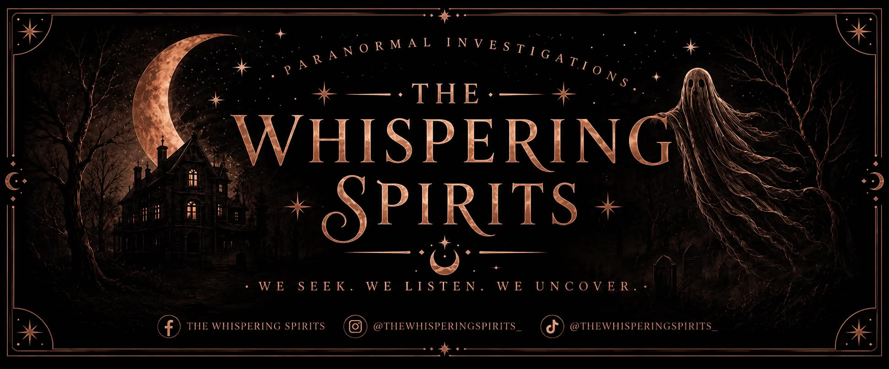

Our Story
About The Whispering Spirits
Who we are, how we work, and what to expect when you join an investigation.
Our History
The Whispering Spirits was founded by a small group of investigators with a shared interest in the history of reportedly haunted locations and a methodical approach to paranormal investigation.
Since then, we have organised investigations at a range of locations with documented histories of reported paranormal activity, welcoming both newcomers and experienced investigators to join us.

Our Investigation Philosophy
We approach every investigation with curiosity rather than certainty. Our aim is to document what happens at a location as carefully and objectively as we can — not to prove or disprove the existence of the paranormal.
We combine traditional investigation techniques, such as vigils, EVP sessions and observation, with equipment-based monitoring, and we encourage attendees to draw their own conclusions from what they experience.
The Team
Our Investigators
Placeholder profiles — replace with your real team.
Investigator Name
Lead InvestigatorPlaceholder bio — add a short introduction, area of focus and years of experience.
Investigator Name
Equipment & Technical LeadPlaceholder bio — add a short introduction, area of focus and years of experience.
Investigator Name
Historical ResearchPlaceholder bio — add a short introduction, area of focus and years of experience.
On The Night
What Happens During An Investigation
A typical structure — timings vary by location.
Arrival & Briefing
We introduce the location's history, outline the evening's structure, and go over safety and conduct expectations.
Guided Walk-Through
An initial walk-through of the location, highlighting areas of reported activity and points of historical interest.
Investigation Sessions
Small-group and full-team sessions using a mix of traditional and equipment-based methods, led by our investigators.
Debrief
We close the evening by reviewing what was experienced and recorded, and answering any questions.
Our Tools
Equipment We Use
A mix of traditional and modern investigation equipment.
Audio Recorders
Used during EVP (electronic voice phenomena) sessions.
Cameras & Night Vision
Static and handheld cameras to document each session.
Temperature Monitors
Used to note environmental changes during a session.
EMF Meters
Used to monitor electromagnetic field readings on location.
Location Maps
Floor plans and historical records referenced throughout the evening.
Traditional Methods
Vigils and observation sessions alongside our equipment-based work.
Safety First
Safety & Respect For Locations
The safety of attendees and the respectful treatment of every location we visit are central to how we work. All investigations are carried out with the permission of the location's owners, and we ask every attendee to follow our on-the-night guidance.
We recommend appropriate clothing and footwear for the location, and we brief attendees on any specific hazards before an investigation begins.
Join Us
Ready to see it for yourself?
Browse our upcoming investigations and reserve your place.